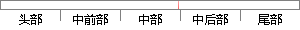

音乐播放模块中，主要由播放列表、歌曲概要信息和播放条这三个子模块组成。
片段位置图

相似结果|
1
原句片段：音乐播放模块中，主要由播放列表、歌曲概要信息和播放条这三个子模块组成。
相似片段 1：信息,创建自己的应用,就像是一个网络中的“云电台...的子条目、关联条目和音乐播放列表等8 个主要的API...音频模块用于播放音频、播放控制,同时显示当前歌曲的...
|
※ 片段修改建议 ※
近似词参考：- 主要：首要 重要
- 概要：提要
- 组成：构成
系统自动生成语句：音乐播放模块中，首要由播放列表、歌曲提要信息和播放条这三个子模块构成。
注：本片段修改建议为系统自动生成，仅供参考。